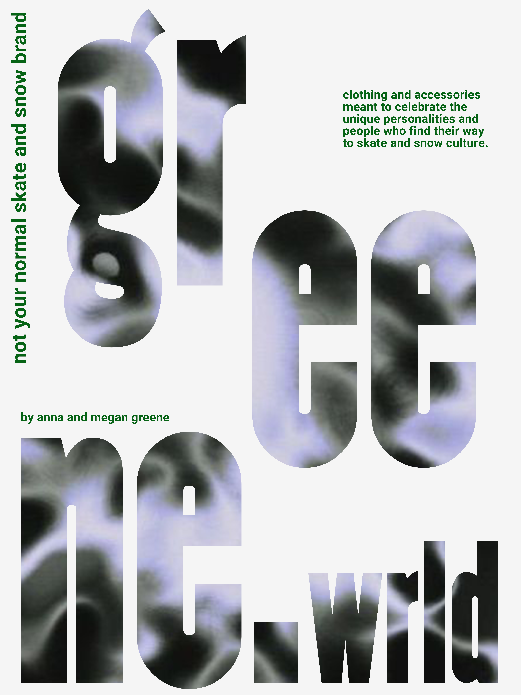
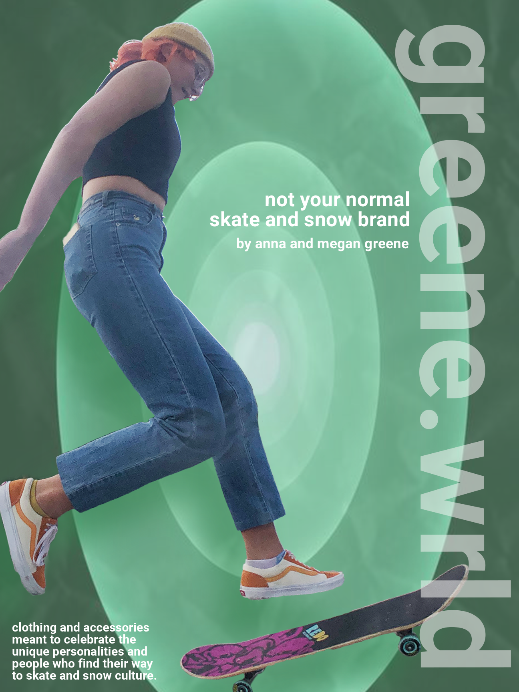

- to create a brand identity that communicated our core values: authentic, festive, and genuine
- to create a website that has a design consistent with our brand identity while also operating intuitively for e-commerce users
GREENE.WRLD
Year
2021
2021
Skills
UI & UX Design
Wireframing
Prototyping
Branding
Graphic Design
UI & UX Design
Wireframing
Prototyping
Branding
Graphic Design
Tools
Figma
Adobe Suite
Procreate
Blender
Figma
Adobe Suite
Procreate
Blender
For the class ME 125: Visual Frontiers, I was given the imperative to create an entire brand from scratch. This included creating a brand identity, narrative, and variety of interactions: posters, website, etc. The brand I created was greene.wrld: a snow and skate apparel company (fictionally) founded with my sister. My challenge was to create a website and brand identity that conveyed our vision statement: “Clothing and accessories meant to celebrate the wacky personalities and people who find their way to skate and snow culture.” My high level goals for the project were:

Logo Generation
I started with traditional pen and paper to create a logo for my brand. The hand drawn typography ended up becoming a central component of brand identity, and over the course of the project I explored using different mediums to create a 3d version of the spiral logo. The final results were created using Procreate, Adobe Illustrator, & Blender. I used an iterative design process that involved competitor research, peer feedback, and, of course, a lot of iteration both with pen and paper and digitally.
I started with traditional pen and paper to create a logo for my brand. The hand drawn typography ended up becoming a central component of brand identity, and over the course of the project I explored using different mediums to create a 3d version of the spiral logo. The final results were created using Procreate, Adobe Illustrator, & Blender. I used an iterative design process that involved competitor research, peer feedback, and, of course, a lot of iteration both with pen and paper and digitally.

Additional Branding
While the logo was the foundation of brand identity, I also developed a variety of other components. These included a brand profile, a promotional video, and posters pictured below.
While the logo was the foundation of brand identity, I also developed a variety of other components. These included a brand profile, a promotional video, and posters pictured below.


Website
I followed the standard design thinking process to develop the final high-fidelity prototype of greene.wrld. The website uses familiar touchstones and a simple user interface to allow users to easily navigate our brand and consistently redirect them to our products: ultimately our goal as an apparel company is to sell clothes. For example, an intuitive design decision I made was putting the menu bar at the top and keeping menu items consistent with traditional e-commerce sites.
However, I used hand-drawn typography, unique animation, and an unexpected color palette to communicate to users the DIY, hand-grown ethos of our brand. Centering focus on the “what our friends are wearing section” was a way to communicate this tight-knit feeling and brand identity while also not distracting from the real focus of the website, clothing that we are selling to users.
For this prototype, I also learned how to integrate Figma interactions and parallax scrolling into my designs. I also used a mobile first approach to designing the website for a challenge.
*please make Figma prototype full screen
I followed the standard design thinking process to develop the final high-fidelity prototype of greene.wrld. The website uses familiar touchstones and a simple user interface to allow users to easily navigate our brand and consistently redirect them to our products: ultimately our goal as an apparel company is to sell clothes. For example, an intuitive design decision I made was putting the menu bar at the top and keeping menu items consistent with traditional e-commerce sites.
However, I used hand-drawn typography, unique animation, and an unexpected color palette to communicate to users the DIY, hand-grown ethos of our brand. Centering focus on the “what our friends are wearing section” was a way to communicate this tight-knit feeling and brand identity while also not distracting from the real focus of the website, clothing that we are selling to users.
For this prototype, I also learned how to integrate Figma interactions and parallax scrolling into my designs. I also used a mobile first approach to designing the website for a challenge.
*please make Figma prototype full screen